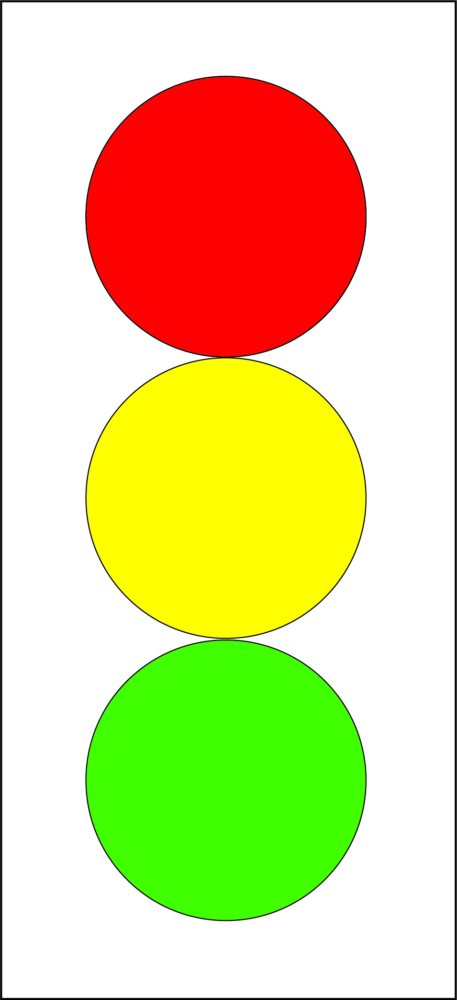

How to make Traffic Light in Adobe Illustrator
By King Nguyen
Email Address: hnguye78@gmu.edu
1. Open Adobe Illsutrator
2. Make new document "Letter Size". BUT make it landscape
3. Select Shape tool or press "L" on keyboard
4. Select and fill Red color
5. Select stroke and fill black
6. Select shape. Press and hold shift on keyboard and drag to a desired size
7. Check and detect if it's a red circle
8. Click on Red circle
9. Control C to copy, then control F to paste in front
10. Select the copied circle, then press and hold shift to drag down evenly down. Until it touches the bottom end of Red circle
11.On Duplicate red, select and fill to yellow
12. To make bottom green lgiht, select yellow and repeat step 10
13. On duplicate yellow circle, Select fill to green
14.Done. There's is your traffic light
15.To save, control+s. Name document and select location to save, and click save. Hooray!
Classmates Drawings attempted by me